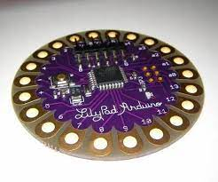
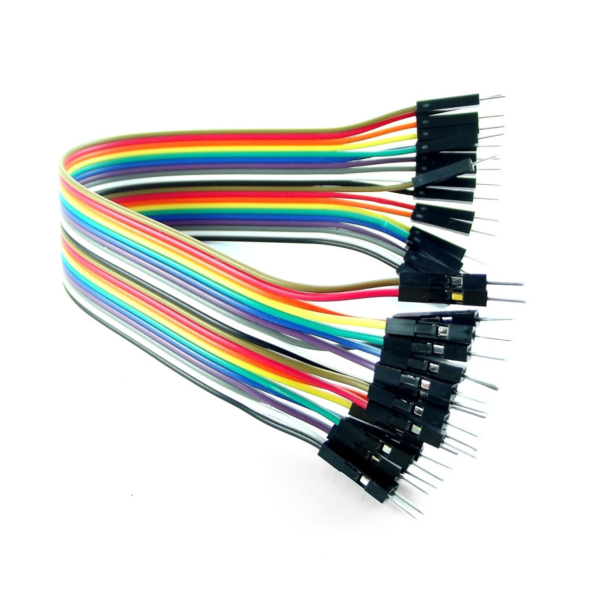

See Me Safe
¡Hola!
Hoy estamos muy emocionados de presentarles un proyecto en el cuál hemos estado trabajando durante la mayor parte del año lectivo: el desarrollo de un prototipo de chaqueta innovadora. Este proyecto representa una combinación de tecnología y funcionalidad, con el objetivo de revolucionar la manera en que interactuamos con la vestimenta en nuestro día a día
Teniendo un funcionamiento el cual es fácil de aplicar, así como una rápida adaptación al manejo del mismo chaleco. Siendo así un medio por el cual la comunidad puede asegurar su seguridad en la vía rural.


Chaleco Señalizador Para Ciclistas
Introducción
El ciclismo se ha convertido en una forma popular de transporte y recreación en todo el mundo, y en Paraguay no es una excepción. Cada vez son más las personas que a diario recorren las calles de Asunción y las demás ciudades metropolitanas sobre una bicicleta, ya que es una opción viable, económica y saludable para transportarse.
Sin embargo, a pesar de su creciente popularidad, los ciclistas enfrentan desafíos significativos, y uno de los más preocupantes es la falta de visibilidad durante su circulación en la vía pública. La poca iluminación adecuada en las bicicletas y la ausencia de elementos reflectantes en la vestimenta y los equipos de seguridad hacen que los ciclistas sean menos visibles durante las horas de poca luz o en condiciones climáticas adversas.
Ante esta preocupante situación, se plantea implementar la construcción del prototipo de una chaqueta inteligente que indique la dirección de giro del ciclista.
Nuestro equipo se ha embarcado en la misión de diseñar y construir un chaleco que no solo sea cómodo, sino que también integre tecnologías de vanguardia para mejorar la experiencia del usuario de maneras sorprendentes durante su transcurso en la vía pública.
informacion sobre el proyecto
Esta prenda de vestir es un innovador prototipo de chaqueta diseñada específicamente para ciclistas, que combina tecnología y funcionalidad. Este chaleco ha sido desarrollado para abordar las necesidades de los ciclistas, brindando una experiencia de conducción más segura y más práctica a la hora de estar en la vía pública.
El proyecto consiste en un chaqueta rompevientos el cual tiene incorporados en la espalda un completo sistema de componentes los cuales ofrecen una variedad de opciones al usuario, las cuales lo ayudarán a tener un seguro desplazamiento por la vía pública.
Características principales:
- Iluminación Inteligente: El chaleco está equipado con luces LED integradas en la parte posterior, que son activadas de acuerdo a los movimientos que realice el ciclista con su mano. Estas luces mejoran la visibilidad del mismo tanto de día como de noche, aumentando su seguridad en la carretera.
- Indicadores de Giro Automatizados: Los indicadores de giro incorporados se activan automáticamente cuando el ciclista realiza los movimientos específicos. El sensor de movimiento detecta los movimientos del brazo y activa las luces led's correspondientes en la dirección del giro, notificando a los conductores y peatones sobre las intenciones del ciclista.
- Comodidad y Ajuste: Fabricado con materiales transpirables y ligeros, la chaqueta ha sido diseñada pensando en la comodidad durante largos paseos en bicicleta. Cuenta con opciones de ajuste personalizado para adaptarse a las diferentes necesidades de los ciclistas.
- Batería de Larga Duración: El sistema de batería de alta capacidad proporciona una larga duración, lo que asegura que el chaleco esté listo para cada viaje sin preocupaciones de quedarse sin energía.
Objetivo del proyecto
La implementación de una chaqueta Inteligente diseñada específicamente para ciclistas como un método de señalización representa un avance significativo en la seguridad vial y en la promoción del uso de bicicletas como medio de transporte. Esta chaqueta no solo ofrece una mayor visibilidad para el ciclista, sino que también actúa como una herramienta de comunicación activa con otros usuarios de la vía, lo que puede reducir de manera considerable los riesgos de accidentes y siniestros viales.
Uno de los desafíos más críticos para los ciclistas en las carreteras es su visibilidad limitada, especialmente en condiciones de poca luz o climáticas adversas. La Chaqueta Inteligente aborda esta cuestión al incorporar elementos de iluminación y señalización en su diseño. Estos elementos pueden ser luces LED integradas en la tela de la chaqueta, que pueden emitir señales luminosas en diferentes direcciones para indicar giros, frenadas o cambios de dirección. Estas señales luminosas son mucho más visibles que las señales tradicionales de brazo y ofrecen una comunicación más clara y efectiva a otros conductores y peatones.
Una característica importante de esta chaqueta es su facilidad de uso. Los ciclistas pueden activar las señales con simples movimientos, lo que significa que no se distraerá de la conducción mientras indican sus intenciones. Además, la Chaqueta Inteligente podría contar con una batería recargable de larga duración para garantizar su funcionamiento durante los trayectos más largos.
En términos de promoción del uso de bicicletas, esta chaqueta puede tener un impacto positivo. Al brindar a los ciclistas una manera efectiva de comunicar sus movimientos a otros usuarios de la vía, se crea un ambiente más seguro y confiable para todos. Los conductores y peatones tendrán una mejor comprensión de las intenciones de los ciclistas, lo que a su vez podría reducir la posibilidad de conflictos en la carretera.
En resumen, la implementación de una Chaqueta Inteligente señalizadora para ciclistas representa un enfoque innovador para abordar los desafíos de seguridad vial que enfrentan los ciclistas. Al aumentar la visibilidad y mejorar la comunicación entre los usuarios de la vía, esta chaqueta tiene el potencial de reducir los riesgos de accidentes y fomentar el uso de bicicletas como una alternativa de transporte sostenible y seguro.
Funcionamiento
El MPU6050, ubicado en el dorso de la mano izquierda, al encontrarse inicialmente en el ángulo 0º del eje de abscisas, no envía ninguna señal al Arduino LilyPad. Al inclinar dicho giroscopio dentro del rango de 50º a 70º durante tres segundos, se envía una señal al LilyPad, el cual recibe y emite un pulso positivo (voltaje) a la salida (pin 5 rango positivo y pin 13 rango negativo), el cual pasa por un elevador de voltaje, pasando de 5V a 12V, valor por el cual la tira de LEDs trabaja, encendiendo los leds ubicados en el lado posterior izquierdo.
Si se inclina dentro del rango de -50º a -70º durante tres segundos, el Giroscopio enviará una señal al LilyPad, este lo recibirá y luego emitirá un pulso positivo a la salida (pin 13 rango positivo y pin 5 rango negativo). Como ya se ha mencionado, este pulso pasa por un elevador de voltaje y finalmente llega a los LEDs ubicados en el lado posterior derecho.
Estos LEDs emitirán una secuencia de intermitencia durante ocho segundos y luego se apagan.
Al inclinar la mano hacia adelante, dentro de los ángulos 50 y 60 del eje de ordenadas, se envía una señal al Arduino y este emite pulsos positivos a las salidas de los pines 5 y 13, los cuales se encenderán indefinidamente hasta que la mano vuelva a su posición inicial (0º).
Por otro lado, al estar inclinando la mano hacia atrás, dentro del rango de -50º a -60º del eje de ordenadas, los pines 5 y 13 del LilyPad emiten un pulso positivo, logrando encender ambas direccionales y realizar una secuencia de intermitencia durante ocho segundos.
Ventajas Del Chaleco
- La primera ventaja con respecto a las chaquetas convencionales es que este logra una mayor visibilidad del ciclista a la hora de transitar por la vía y mas en horas de la noche.
- La segunda con respecto a otras chaquetas que realizan lo mismo es que nuestros componentes no están cocidos por la chaqueta, lo que logra una mayor comodidad a la hora de portarlo.
- La tercera ventaja es que, al utilizar una batería recargable, el uso del chaqueta no requiere estar gastando en baterías todo el tiempo, ayudando así en pequeña medida al medio ambiente.
- Las ventaja que aportaría al usuario en su estilo de vida y al medio ambiente, ya que el uso de la bicicleta y sus implementos es una alternativa cada vez más viable por la inmensa contaminación que producen los medios de transporte de combustión que emanan gases de invernadero.
Construccion y materiales utilizados
Componentes a utilizar
Arduino LilyPad ATmega328P:
El Arduino LilyPad es una variante especial de Arduino diseñada específicamente para proyectos de electrónica vestible (wearables). Es una tecnología desarrollada por Leah Buechley y diseñada en coordinación con SparkFun, y su principal objetivo es permitir a los diseñadores, artistas y aficionados incorporar componentes electrónicos en textiles y prendas de vestir para crear dispositivos portátiles interactivos.
Características técnicas:
- Microcontrolador: ATMega328V.
- Velocidad de reloj: 8 MHz.
- Voltaje de trabajo: 3,3V.
- Voltaje de entrada: 2,7 a 5,5 voltios.
- Pinout: 14 pines digitales (6 PWM) y 6 pines analógicos.
- 1 puerto serie por hard-ware.
- Memoria: 16 KB Flash (2KB para bootloader), 1KB RAM y 512 Bytes Eeprom

Modulo GY-521 MPU6050:
El módulo GY-521 MPU6050 es un dispositivo de medición inercial que combina un acelerómetro de tres ejes capaz de medir la aceleración lineal en los ejes x, y, e z, proporcionando información sobre los cambios de velocidad, y un giroscopio de tres ejes, que mide la velocidad angular o la tasa de cambio en el ángulo de rotación en x, y, e z, permitiendo determinar la orientación y rotación del objeto.
Características técnicas:
- Chip: MPU-6050
- Fuente de alimentación: 3V – 5V
- Rango del giroscopio: + 250500 1000 2000 ° / s
- Rango de aceleración: ± 2 ± 4 ± 8 ± 16 g
- Convertidor AD de 16 bits integrado en chip, salida de datos de 16 bits
- Distancia entre pines 2,54 mm
- Comunicación: I2Cyyu
Tira de LEDs:
Una tira que combina varios ledes de alta luminiscencia que funciona a partir de 12V CC
Cable dupount :
Es un cable puente para prototipos, el cual posee un conector en cada punta, normalmente utilizado para interconectar entre sí los componentes en una placa de pruebas.
Características técnicas:
- Tipo: Macho – Macho, Hembra – Hembra
- Longitud: 20cm
- Voltaje máximo: 200V

Modulo regulador de Voltaje para Arduino XL6009E1:
Su función es entregar un voltaje de salida constante regulada y es capaz de transformar un nivel de voltaje a otro mayor. El XL6009 es un módulo “Step-Up” de alto rendimiento con corriente de conmutación de 4 Amperios de salida, con una eficiencia del 94%.
Características técnicas:
- Módulo de naturaleza: Boost no aislado (BOOST)
- Método de rectificación: Rectificación no sincrónica
- Intervalo de entrada: 4 A (máximo), sin carga 18 mA (entrada 5v, salida 8V, sin carga inferior a 18 mA). Cuanto mayor sea el voltaje, mayor será la corriente en vacío.
- Eficiencia de conversión: <94% (cuanto mayor sea la diferencia de presión, menor será la eficiencia)
- Frecuencia de conmutación: 400 kHz
- Ondulación de salida: 50 mV (cuanto mayor es el voltaje, mayor es la corriente, mayor es la ondulación)
- Regulación de carga: ± 0,5%
- Regulación de tensión: ± 0,5%
- Temperatura de funcionamiento: - 40 °C ~ + 85 °C
- Dimensiones: 43 x 21 x 14 mm
Estructura
El arduino Lilypad estará conectado a una batería recargable de 3.5V por los pines VCC y GND del arduino, que siguiendo estará conectado al MPU 6050 por los pines 5V y GND de arduino a los pines VCC y GND del sensor para que este quede alimentado, luego los pines analogicos A4 y A5 van conectados a las entradas SCL y SDA del sensor para la detección de datos, siguiendo, el pin digital 2 del arduino a la entrada INT del sensor para la comunicación del Arduino con el sensor. Los ledes estarán conectados a los pines digitales de arduino 11, 5 y 8 que pasan por un amplificador de voltaje, para que las tiras de leds queden alimentadas, y estas estarán en la espalda de la chaqueta.
El Lilypad estará cosido a la espalda de la chaqueta, junto a los Ledes, el sensor ira tambien cosido por la manga de la chaqueta, cerca de la muñeca , para que el giro del sensor sea mas práctico.
intregrantes del grupo
- Amira Maria Ailém Cáceres Cristaldo
- Javier De Jesús Ramírez Aguilera
- Enzo Daniel Vargas Salinas
- Angel Ruben Vazques Caceres